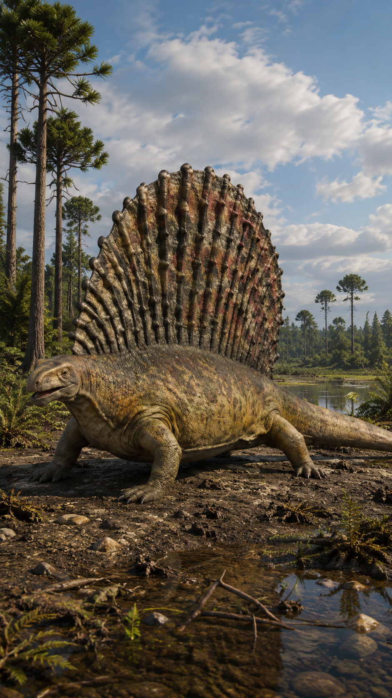
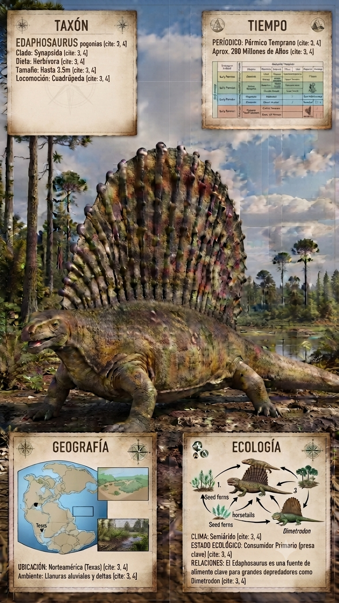
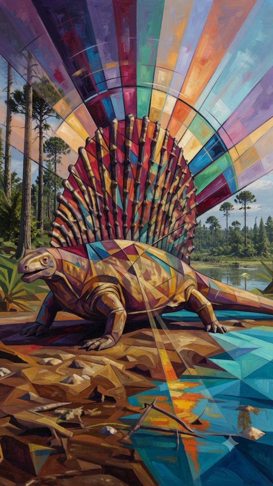
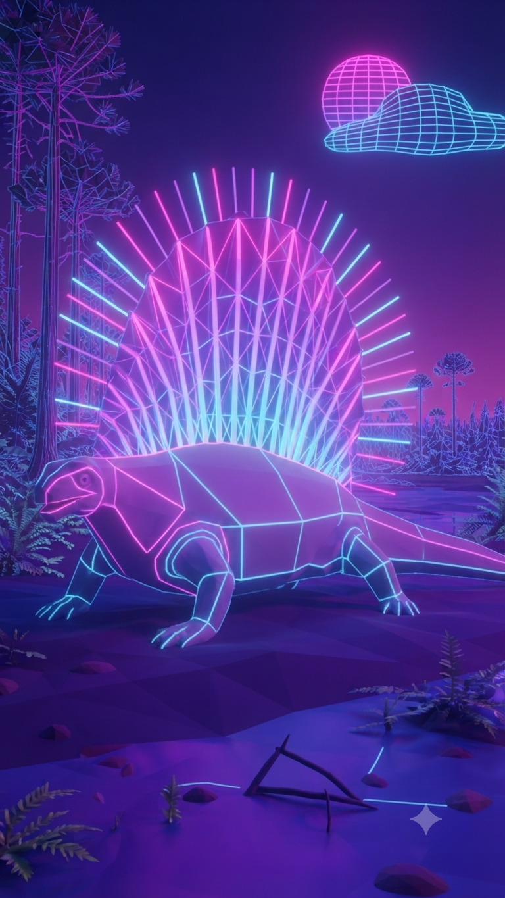

Paleoficha de PalEntropía




TAXÓN:
Edaphosaurus pogonias
CLADO:
Edaphosauridae (Synapsida, Eupelycosauria)
DIETA:
Herbívoro especializado en vegetación fibrosa.
TAMAÑO:
Entre 2,5 y 3 metros de longitud.
LOCOMOCIÓN:
Cuadrúpeda, con marcha lateral y extremidades robustas.
TIEMPO:
Pérmico Inferior (Cisuraliense), aproximadamente hace 299–295 millones de años.
GEOGRAFÍA:
Norteamérica meridional (Euramérica).
EQUIVALENCIA PALEOGEOGRÁFICA:
Zonas tropicales bajas cercanas al ecuador.
AMBIENTE PALEAOECOLÓGICO:
Llanuras aluviales con alternancia de estaciones húmedas y secas, en ecosistemas de transición entre pantanos y llanuras abiertas.
ECOLOGÍA:
• Flora: Bosques de pteridospermas y coníferas primitivas.
• Fauna secundaria: Sinápsidos basales y anfibios lepospóndilos.
• Flora: Bosques de pteridospermas y coníferas primitivas.
• Fauna secundaria: Sinápsidos basales y anfibios lepospóndilos.
• Nichos: Megaherbívoro con una compleja dentición marginal y palatina capaz de triturar vegetación resistente, uno de los primeros grandes consumidores de plantas entre los vertebrados terrestres.
• Relaciones: Su característica vela dorsal, formada por espinas neurales con barras transversales, probablemente participaba en la termorregulación y en la comunicación visual entre individuos.
CLIMA:
Wm16 (Tropical estacional). Clima cálido con marcada variabilidad estacional y elevada producción vegetal.
ESTADO ECOLÓGICO:
Estable. Edaphosaurus representa el máximo grado de especialización herbívora entre los sinápsidos del Pérmico temprano y uno de los primeros grandes transformadores de biomasa vegetal en los ecosistemas terrestres.